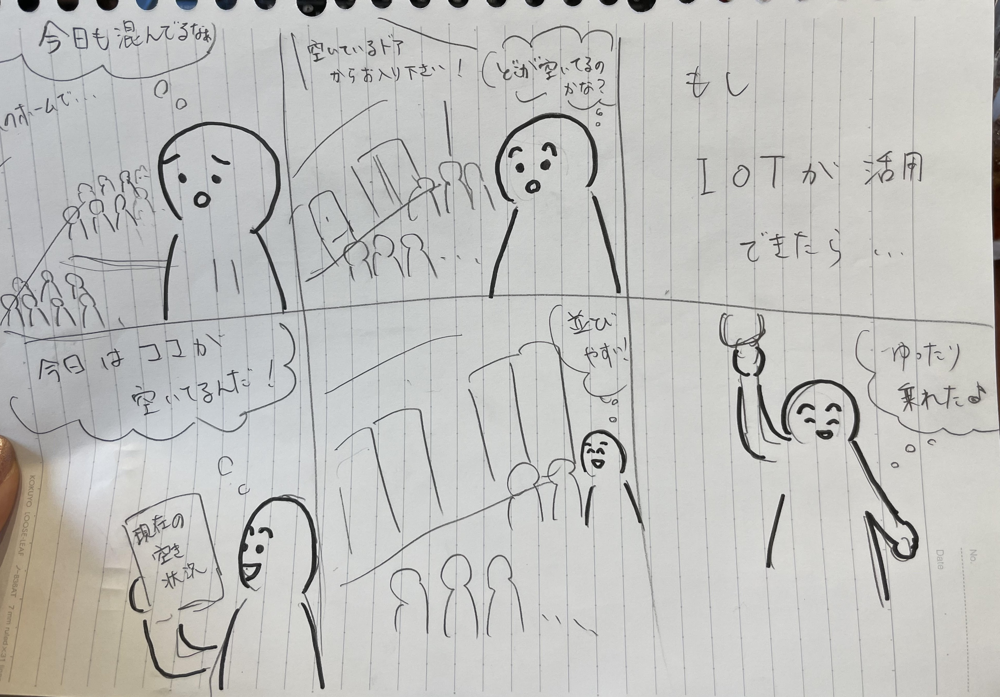

第１回 IoTに関して
1.IoTとは何か
chatGPTに聞いてみた
まざまな物体（モノ）がインターネットを介してデータをやり取りし、相互に連携することで、効率化や自動化を実現する新しい形態の情報通信ネットワーク
Iotを使った身近な製品（グループワーク）
2.IoTで何が出来そうか（グループワーク）
3.IoTで何が出来そうか（自分で考えたアイディア）
駅のホームや車両内の空き状況が分かるサービス

 まざまな物体（モノ）がインターネットを介してデータをやり取りし、相互に連携することで、効率化や自動化を実現する新しい形態の情報通信ネットワーク
まざまな物体（モノ）がインターネットを介してデータをやり取りし、相互に連携することで、効率化や自動化を実現する新しい形態の情報通信ネットワーク